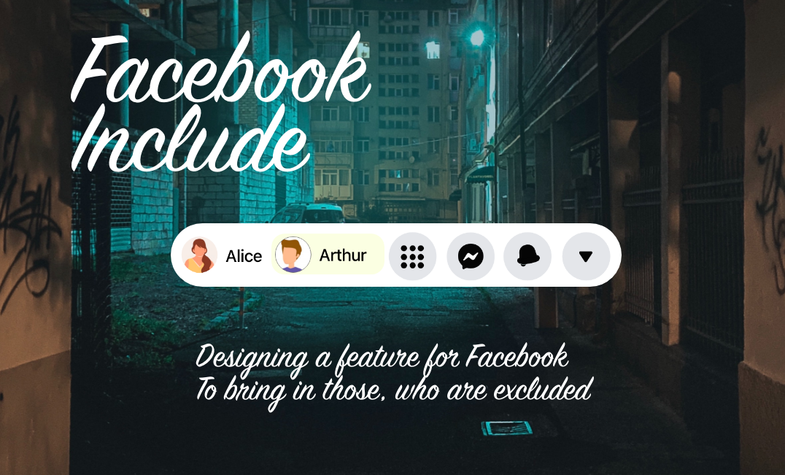

February 2020

About The Project
Facebook Include is a feature, that allows an existing user share their profile with those, who lives on the margins of society.
The Goal
Purpose of the feature is to allow existing users include those, who do not have access to internet - share their profile with.
Target Audience
The product is addressed to all Facebook users, humanitarians and social activists.
My Role & Responsibilities:
UI/UX Design, UX Research
I have used design thinking methodology, applying alongside the user-centered design process to make sure that the overall design decisions are aligned with user needs.
Empathize
→
Define
→
Ideate
→
Design
→
Prototype
→
Test
Research
Project Background
The idea for this project has been born back in 2018, when every day on my way to work I have been passing by homeless people on the streets of London. One day on my way to the gym during my lunchtime I have seen flowers and picture in the empty place, when one of them used to lie/sit. I thought it would be great to make the issue of homelessness more personal. How about being able to "adopt" vulnerable person on your Facebook profile? Being able to share with your network their needs on a daily basis? One of your friends may have a warm scarf to share, another would make or buy their favourite sandwitch. Would that actions help them feel part of the community again?
Research goals
Conclude that activating the Facebook Include feature will support bringing those, who leaves on the margins of society back in the center of attention.
Research Questions
- How often Facebook users activate the FacebookInclude option?
- How often network is reacting to the post related to the 'adopted user'?
Key Performance Indicators
- Conversion Rate
- Time on task
- User Error Rate
How to make FecebookInclude feature accessible? The surveys has been conducted and participants interaction with feature has been recorded to gather both quantitive and qualitive data with inclusive group of users. After design modification another round has been conducted.
After understanding of the background research user flows, personas, wireframes and protypes has been created.
Prototype Testing
Usability testing has been conducted on selected user flows of the app. Testing took shape of the moderated surveys, which has been recorded asking participants to finish particular user path. Prototype has been adapted to desktop. Then the prototype has been updated according to insights.
First Round of Prototype Testing
Has been limited to Facebook active users aged between 30-65 years old. Below screens presents heatmaps.
Participants came from Poland, Spain, Italy, Greece.
Users has been asked to complete 1 path.
1.Activate Facebook Include feature within Settings panel.
- Total participants: 5
- Success Rate: 2(40%)
- Avg time: 1.19 min
- Total time users spends on a block: 2 users took between 0s-2min 8s; 2 users took between 2min 8s - 4 min; 1 user skipped the task
Below there is a userflow:
Among the many inequalities exposed by COVID-19, the digital divide is not only one of the most stark, but also among the most surprising. Even in developed countries, internet access is often lower than you might think.
Take the United States for example. More than 6% of the population (21 million people) have no high-speed connection. In Australia, the figure is 13%. Even in the world's richest countries, the web can't keep everyone connected.
Globally, only just over half of households (55%) have an internet connection, according to UNESCO. In the developed world, 87% are connected compared with 47% in developing nations, and just 19% in the least developed countries. Date Source: weforum.org
Recognize the needs of NBU(Next Billion Users)
Building Wireframes, Low-fidelity prototype, High-Fidelity Prototype, Usability Research
I conducted user interviews, which I then turned into empathy maps to better understand the target user and their needs.
- Navigation:
- It is not easy to find the feature. Toggle button would be easier.
- Visibility:
- It is not easy to get straight away what it is about
- Making profile distinction based on different colors may be confusing at first